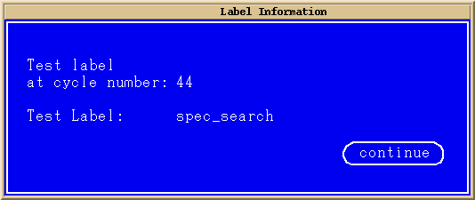

Reading Test Label Information
For debugging purposes it is useful to match a particular cycle in the Timing Diagram to a particular label in your test:
- Move the cursor to the appropriate cycle in the Timing Diagram.
- On the menu click .
The Label Information dialog box opens.

Note The label information displayed always refers to the last test run. - After having read the label, click the continue button to return to the Timing Diagram.
Functional changes
- Introduced before SmarTest 6.3.2